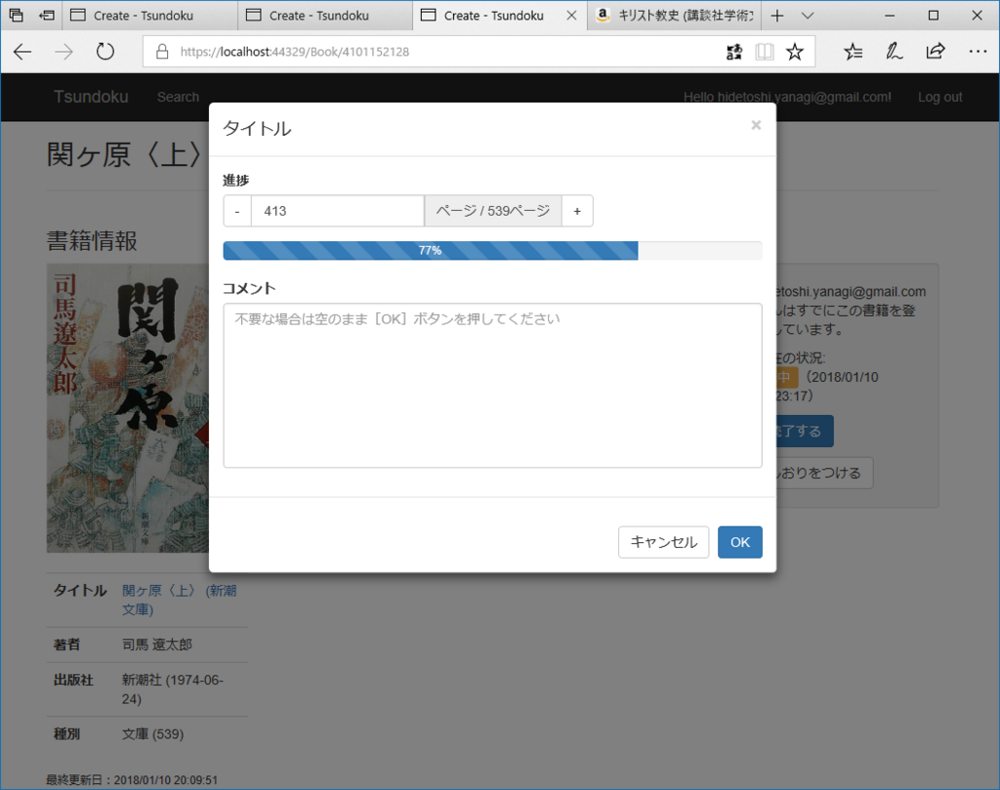

2018年1月10日の日記：「光あれ！」「インターネットに接続できません」
公開日：
夜中に目を覚ました。「アレクサ、照明をつけて」と闇に呼び掛けた。アレクサが答えた。「インターネットに接続できません。アレクサアプリのヘルプをご確認ください」ここ最近、Amazon Echo Dot と eRemote に頼りっきりで、照明のリモコンなど戸棚の奥にしまってしまっている。せめてメガネがあれば夜目も効くのだが、灯りがないとメガネを探すことすらできない。メガネは灯りを求め、灯りはメガネを求め……その堂々巡りの中、尿意だけが果てしなく高まっていく。インターネットはインフラだな、と実感させられた。
まぁ、それはともかく。
昨日はなぜかルーターの調子が悪く、2.4GHz 帯が使えなかった。パソコンのネットは 5GHz 帯でつなげばいいのでなんら問題ないし、むしろそっちの方が輻輳がなく快適なのだと思うけれど、eRemote――説明し忘れていたが、こいつはネットワークに接続できる学習リモコンのようなもので、Amazon Eco Dot（アレクサ）につないで音声で家電をコントロールできる――が 2.4GHz 帯にしか対応していない関係で、2.4GHz 帯をメインに使っていたのだ。おかげで無線でつないでいたプリンターも応答してくれなくなるし……昼過ぎからはなぜか問題が解消されたけど*1、いろいろ踏んだり蹴ったりだった。

LinkJapan eRemote mini IoTリモコン 家でも外からでもいつでもスマホで自宅の家電を操作 【AmazonAlexa対応製品】 MINI
- 出版社/メーカー: LinkJapan
- メディア: エレクトロニクス
- この商品を含むブログ (1件) を見る
でも、このことが逆に Amazon Echo Dot＋eRemote の最強っぷりを改めて証明してくれたと思う。お布団でぬくぬくしたまま「アレクサ、エアコンつけて」「アレクサ、10分後に教えて（← 部屋が温まるまで二度寝）」「アレクサ、照明つけて」ができるの、ほんまサイコー*2。「スマートスピーカー？ どうせすぐ飽きるだろ」と思っていたのに、この1カ月ですっかり信者になってしまったよ。
eRemote は 5GHz 対応の後継機種が出たら買い足してもいい。仕事部屋だけでなく、リビングにも置いてやる。

ほんとは iPad の修理に出かけたり、サンドイッチ買ったり、温泉や飲みにも出かけたかったけど、軽く雨が降っていたので引きこもり。アプリの開発は、読書の進捗メモ（のユーザーインターフェイスだけ）が実装できた。JavaScript は苦手＆久しぶりでサッパリだったけど、Bootstrap の Modal Dialog を組み込んだり、input の値に応じて Bootstrap の Progress を操作できるようにしてみたり……数値のアップダウンコントロールは Touch Spin というサードパーティ製コンポーネントが使いやすそうで、これも組み込んでみた。
ちなみに、ASP.NET Core MVC/Razor Page でちょっとしたスクリプトを組み込みたい場合は、Scripts セクションに書いてしまえばいいと思う。ここだったら jQuery のロードが終わってるはずなので。というか、他のところに書いてたら jQuery が全然動かなくて……はじめは仕方なくバニラで書いてた。Touch Spin を組み込んだら開発者ツールのコンソールに「jQuery が未定義」みたいなエラーが出てきて、はじめて jQuery がロードされていないことに気づいた。
@section Scripts { @{ await Html.RenderPartialAsync("_ValidationScriptsPartial"); }<script src="~/lib/jquery.bootstrap-touchspin.js"></script> <script> $(document).ready(function () { $("#current-page").TouchSpin({ min: 0, max: @Model.Book.NumberOfPages, stepinterval: 1, postfix: 'ページ / ‘ + @Model.Book.NumberOfPages + 'ページ', });
var updateProgressBar = function () { var cur = $(this).val(); var all = @Model.Book.NumberOfPages; var progress = Math.round((cur / all) * 100) + "%"; $("#reaging-progress").css("width", progress); $("#reaging-progress").text(progress); };
$("#current-page").keyup(updateProgressBar); $("#current-page").change(updateProgressBar); }); </script> }
Razor と混在して書いても問題なかったから、モデルデータもぶち込める。